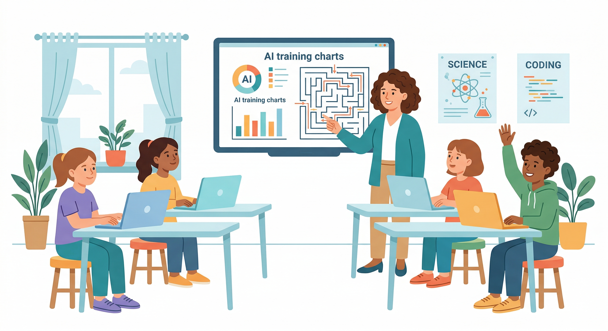

← 返回指南

教學應用
把 RL 帶進課堂
給教育工作者的實戰指南——從五十分鐘體驗課到學期性專題，讓學生親眼看到 AI 如何從亂試到學會
為什麼值得花這節課？
AI 課程很容易變成兩個極端：太淺，只是讓學生用現成工具玩一玩；太深，直接掉進數學公式的泥淖。
強化學習恰好站在一個難得的位置——它的核心邏輯用中文說很清楚（嘗試、獲得回饋、修正策略），
但它展示的東西是真實的 AI 決策過程，不是包裝過的對話介面。
當學生看到一個 Agent 一開始亂走、撞牆、失敗，然後在幾百回合後逐漸找出正確路徑，
那個「哦！它真的在學」的時刻，往往比任何課本解釋都有力。
這正是 Rein Room 要提供的體驗。
一句話定位
RR 不是讓學生「玩 AI 遊戲」，而是讓學生「觀察 AI 如何學會完成任務」——遊戲只是模擬環境，學習才是主角。
三種使用情境
| 情境 | 時間 | 適合對象 | 核心目標 |
|---|
| 體驗課 |
50 分鐘 |
國高中、營隊、家長說明會 |
讓學生看到 AI 從零學習的過程，建立直觀印象 |
| 主題單元 |
3–4 節 |
大學通識、高中選修、補習班進階課 |
理解 RL 核心概念，能解讀訓練圖表，嘗試調參數 |
| 學期專題 |
數週 |
大學資工、研究室、科展 |
設計實驗、比較演算法、產出可分析的訓練數據 |
50 分鐘體驗課：完整流程
這是最容易執行的起點，不需要學生有任何 AI 背景。以下是一個可以直接複製的流程：
1
破冰提問（5 分鐘）
問學生：「你覺得 AI 是怎麼學東西的？」不需要標準答案，目的是讓學生先說出自己的預設。常見回答：「人教它」、「讀很多資料」。接著說：「今天你們要看到另一種方式——AI 自己靠試錯學。」
2
示範探索期（10 分鐘）
老師開啟 RR，載入 Maze2D，用預設參數啟動訓練，不解釋任何東西，讓學生先觀察。問：「你看到它在做什麼？」、「它有在進步嗎？」讓學生描述，再引入 Agent、State、Reward 的術語。
3
概念建立（10 分鐘）
用三個詞說清楚 RL：嘗試（Action）→ 回饋（Reward）→ 記憶（Q-Table）。指著熱力圖說：「這張圖就是 AI 目前認為哪個位置比較有價值。」讓學生觀察熱力圖怎麼隨訓練變化。
4
學生自己動手（20 分鐘）
每人或每組一台電腦，各自載入遊戲、啟動訓練。給一個任務：「試著讓 Reward 曲線往上爬，可以調任何你想調的參數。」不要給答案，讓他們試錯——這本身就是在體驗 RL 的精神。
5
收斂與討論（5 分鐘）
請 2–3 組分享結果：哪個設定讓 AI 學得比較好？為什麼？帶出「探索率太高 AI 一直亂走、太低又不敢嘗試新的路」的直觀結論。
推薦的入門遊戲
Maze2D 是體驗課的首選：視覺直觀（你看得到它在走迷宮）、收斂速度快（幾分鐘內有明顯進步）、Q-Table 熱力圖容易解讀。
如果時間充裕或學生程度較高，可以換 CartPole：4D 連續狀態、物理感強，但需要更多訓練回合才能看到明顯成效。
學生會觀察到什麼？
這些是課堂上常出現的「發現時刻」，老師可以預先準備引導語：
「它一開始好笨！」
這是最好的切入點。回應：「對，它一開始完全不知道什麼叫好什麼叫壞——就像你第一次玩一個新遊戲。
差別是它靠的不是眼睛和直覺，而是靠每次試錯後更新一張數字表。」
「為什麼它有時候還會走回去？」
這是探索機制的問題。回應：「因為我們設了探索率 ε，它有一定機率刻意選『不是最好』的路，
避免以為已經找到最好的路但其實還有更好的沒試過。」這個解釋通常會讓學生恍然大悟。
「熱力圖在顯示什麼？」
回應：「亮的地方表示 AI 認為這個位置『比較有前途』——靠近目標、或是曾經帶來好的回饋。
暗的地方是它還不確定、或是知道那裡不好的位置。」
課堂用參數建議
預設值對大多數情境已夠用，但以下情境建議微調：
| 教學目的 | 建議設定 | 效果 |
|---|
| 快速看到學習成效（示範用） |
α=0.5、γ=0.95、ε=0.2 |
幾分鐘內可見明顯收斂 |
| 示範「探索率太高」的壞處 |
ε=0.9 |
Agent 持續亂走、Reward 不穩定 |
| 示範「探索率太低」的局部最佳 |
ε=0.01，從頭開始 |
很快收斂但通常不是最優路徑 |
| 對比 Q-Learning vs DQN |
切換演算法後清空重訓 |
觀察相同遊戲下兩種演算法的收斂差異 |
課堂現場常見問題
這跟 ChatGPT 有什麼不一樣？
ChatGPT 是學「怎麼說話」，強化學習是學「怎麼做決定」。ChatGPT 背後也用了強化學習（RLHF）來讓回答更符合人類期望——所以這不是兩個競爭的東西，而是同一個工具箱裡的不同工具。
這個 AI 跑起來是在做什麼運算？
每一步它查一張表（Q-Table）找「這個狀態下哪個動作的預期回報最高」，執行後根據實際得到的回饋更新表格。全程只有查表和加法乘法，沒有神秘的黑盒子。
這個平台要安裝什麼嗎？
不需要。打開瀏覽器連上 reinroom.leaflune.org 就能用，包括手機。唯一的建議是使用電腦版瀏覽器，螢幕夠大才方便觀察圖表。
程度比較弱的學生跟得上嗎？
體驗課不需要任何程式或數學基礎。學生的任務是「觀察」和「猜測」，而不是「推導」。理解「AI 在試錯中學習」這件事不需要看懂公式。
給家長說明的話術（如果被問到）
「我們不是在教學生打電動，而是用模擬環境讓學生理解 AI 的學習機制——就像飛行員先用模擬器訓練。
這是自動駕駛、機器人控制背後的核心技術，學生會看到 AI 真正在做決策，而不只是跟 AI 聊天。」
進階：3–4 節主題單元設計
| 節次 | 主題 | 學生任務 |
|---|
| 第 1 節 |
什麼是強化學習？ |
觀察 Maze2D 訓練過程，說出 Agent/State/Reward 各是什麼 |
| 第 2 節 |
Q-Table 怎麼更新？ |
看熱力圖解讀「AI 認為哪裡有價值」，對比訓練前後差異 |
| 第 3 節 |
探索 vs 利用 |
分組測試不同 ε 值，紀錄收斂回合數，討論取捨 |
| 第 4 節 |
自由實驗 + 發表 |
選任一遊戲，設計實驗（改參數、換演算法），發表發現 |
最後一件事
強化學習課最容易失敗的方式，是老師把所有概念解釋完才讓學生動手。
建議反過來：先讓學生看到畫面，帶出問題，再用問題拉出概念。
「它為什麼有時候還會走錯？」比「什麼是探索率」更能讓學生記住 ε-greedy 的意義。
RR 的設計初衷就是讓這個反轉變得可能——AI 的學習過程是看得見的，
而看得見的東西，才是真正可以被討論、被理解、被記住的東西。